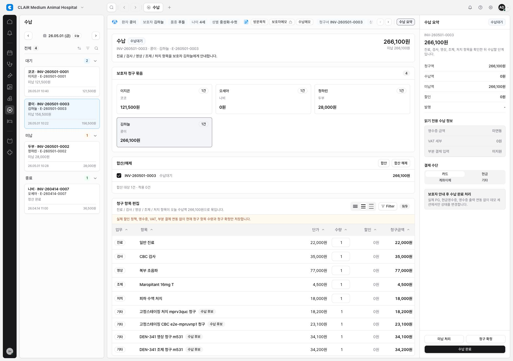

Fixed staging billing table passed
DEN-348 Billing Candidate Table Report
DEN-348은 DEN-341에서 생성된 billing candidate rows가 수납 화면의 청구 항목 편집 table에 보이지 않던 문제를 해결했다. remote candidate invoice UUID와 demo invoice alias가 달라도 현재 열린 encounter/invoice context 안에서 후보 행을 표시한다.
구현
-
src/features/billing/module.tsx에서 billing candidate rows를 현재 열린 invoice context에 매핑해 table에 병합했다. -
candidate row id는
invoice-line-billcand-*prefix를 사용해 persisted invoice line과 구분한다. -
candidate row description 옆에
수납 후보badge를 표시하고, quantity input은 표시 전용으로 둔다. - 청구 확정 저장 payload에서는 virtual candidate row를 제외해, 아직 persisted invoice-line edit으로 오해되지 않게 했다.
Fixed Staging Evidence
- Fixed staging: https://emr-app-shell-prototype-staging-mcso0s-projects.vercel.app
- Preview assigned to fixed staging: https://emr-app-shell-prototype-hsgjd5htv-mcso0s-projects.vercel.app
-
Verified URL:
/w/clair-demo/billing?modulePanel=open&encounterId=encounter-kong-260501&invoiceId=invoice-kong-260501&right=open -
Table readback confirmed: treatment, lab, imaging, and dispensing candidate rows all displayed with
수납 후보.

검증
-
PLAYWRIGHT_BASE_URL=http://127.0.0.1:3109 npx playwright test tests/billing.spec.ts -g "billing renders live candidate rows|billing maps encounter candidates" --reporter=line통과. npx tsc --noEmit --pretty false통과.npm run security:secrets통과.git diff --check통과.- Vercel preview build 통과.
금지/미수행
- Production deploy는 하지 않았다.
- remote Supabase migration push는 하지 않았다.
- 실데이터 import는 하지 않았다.
- 원격 RLS replay는 하지 않았다.
- 후보를 persisted invoice line으로 최종 확정하는 새 회계 정책은 구현하지 않았다.
남은 판단
DEN-348은 candidate visibility를 해결한다. 후보를 실제 invoice line으로 승격하거나 재계산/확정 저장 정책에 포함하는 범위는 별도 제품/DB 정책 이슈로 다룬다.